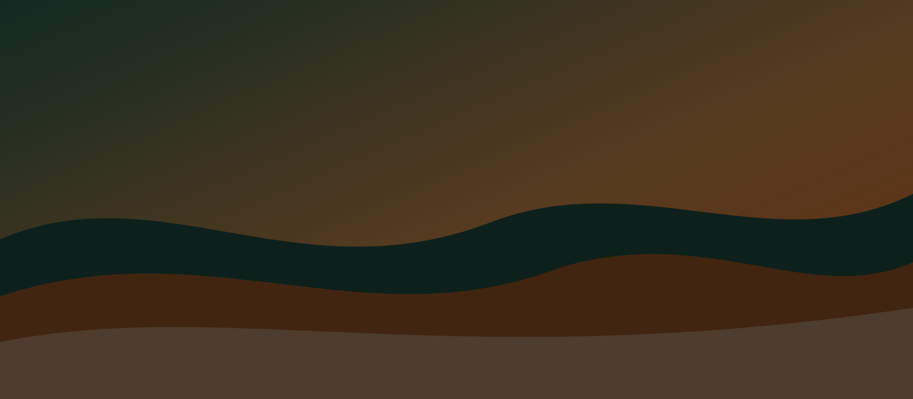
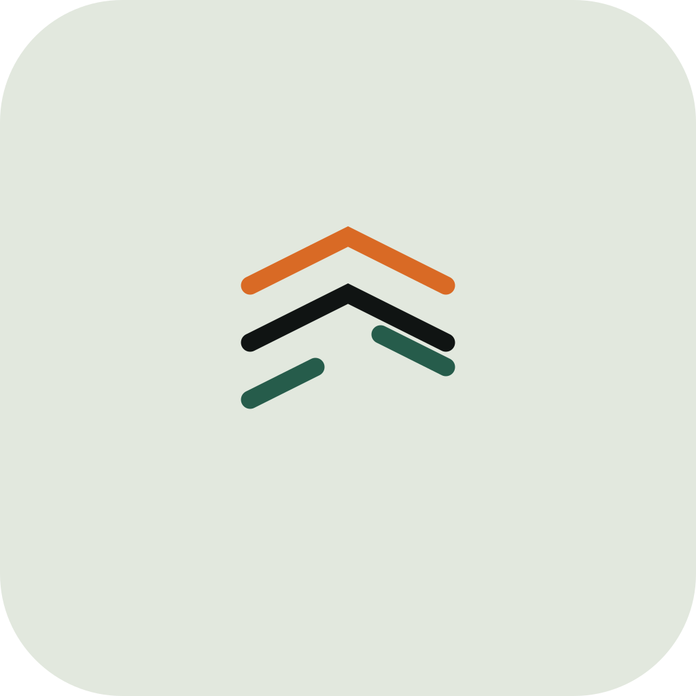

Do
Keep the gap in the lowest stratum. Set the name in Anton, uppercase in display, sentence case in the lockup.
01 — Mark
How the Voidtrace mark, sage field, amber lamp, and condensed type sit together. A practice document for the page in library/websites/voidtrace/.
Lockups
Clearspace
Keep one mark-height of sage empty on every side. Minimum symbol size is 16px. The wordmark does not go under 96px wide.
02 — Colour
Ground #E2E8DE
Ink #101413
Amber #D96A25
Pine #265C4B
| Pair | Ratio |
|---|
03 — Type
04 — Field
05 — Imagery


06 — Use
Do
Keep the gap in the lowest stratum. Set the name in Anton, uppercase in display, sentence case in the lockup.
Don't
Do not stretch the mark, spin it, or set it in a script face. Voidtrace